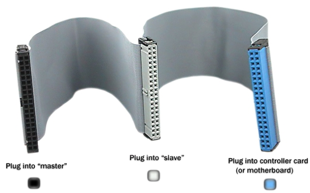
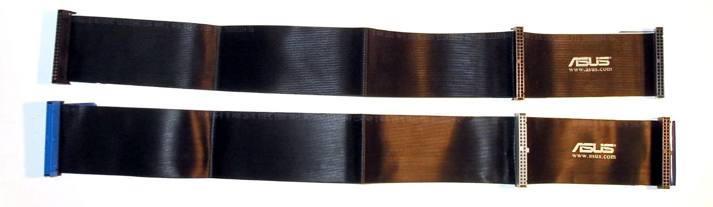
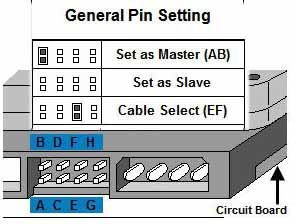

De PATA of Parallel Advanced Technology Attachment standaard is een standaard met een lange geschiedenis. Deze evolueerde vanuit Western Digital's Integrated Drive Electronics of IDE interface. IDE is de voorloper van AHCI en NVMe. Hierover leer je later meer. Bijgevolg worden de namen ATA en IDE vaak door elkaar gebruikt en voor synoniemen aanzien. Na de introductie van SATA ofwel Serial ATA werd ATA hernoemd naar Parallel ATA of PATA.
De standaard wordt gebruikt om opslagapparaten zoals harde schijven, floppy stations en optische stations (CD-ROM, DVD) aan te sluiten.

PATA ribbon kabels hebben een maximum lengte van ongeveer 45 centimeter. Ze tellen twee of drie 40-pin connectoren die langs de ene kant aangesloten worden op het moederbord en langs de andere kant op opslagapparaten zoals harde schijf en CD-ROM.
In een moderne computer ga je ze niet meer terugvinden.
Om de snelheid verder op te drijven zijn er ook PATA kabels met 80 geleiders (onderaan) op de markt. Deze extra geleiders zijn vooral ground wires om, zoals je al kan raden, crosstalk te vermijden. De connectoren blijven dezelfde.

Zoals je weet stuurt een PATA kabel 16 bits tegelijkertijd aan gegevens. Gezien er twee apparaten aangesloten kunnen worden op dezelfde kabel moet er uitgemaakt worden naar welk apparaat deze gegevens worden gestuurd.
Om dit in goede banen te leiden wordt het ene apparaat ingesteld als device 0 ofwel de master en het andere als device 1 ofwel de slave.
Dit gebeurt aan de hand van een jumper instelling op de harde schijf. Een jumper is een klein stukje plastic met daarin een geleider dat dient als een schakelaar.

Wanneer twee opslagapparaten aangesloten worden op dezelfde kabel moet de ene ingesteld worden als master en de andere als slave. Er is echter ook nog een derde optie cable select genaamd. Bij deze laatste optie worden beide opslagapparaten ingesteld op cable select en is het de kabel die bepaalt welk apparaat master wordt en welk apparaat slave.
Doorgaans zet je het belangrijkste apparaat, bijvoorbeeld de harde schijf met het besturingssysteem, als master en het andere als slave.
Indien er slechts één apparaat is dat aangesloten moet worden stel je dat in als master. Op sommige harde schijven wordt dit echter aangeduid als single.